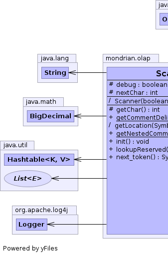
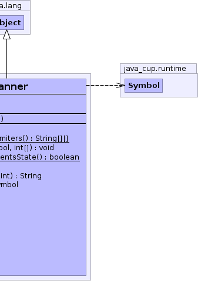

public class Scanner extends Object
|  |  |
| Modifier and Type | Field and Description |
|---|---|
protected boolean |
debug |
protected int |
nextChar
single lookahead character
|
| Constructor and Description |
|---|
Scanner(boolean debug)
Creates a Scanner.
|
| Modifier and Type | Method and Description |
|---|---|
protected int |
getChar()
Read a character from input, returning -1 if end of input.
|
static String[][] |
getCommentDelimiters()
Returns the list of comment delimiters.
|
(package private) void |
getLocation(java_cup.runtime.Symbol symbol,
int[] loc)
Deduces the line and column (0-based) of a symbol.
|
static boolean |
getNestedCommentsState()
Returns the current nested comments state.
|
void |
init()
Initialize the scanner
|
String |
lookupReserved(int i)
return the name of the reserved word whose token code is "i"
|
java_cup.runtime.Symbol |
next_token()
Recognizes and returns the next complete token.
|
protected int nextChar
protected boolean debug
Scanner(boolean debug)
debug - Whether to emit debug messages.public static boolean getNestedCommentsState()
public static String[][] getCommentDelimiters()
protected int getChar() throws IOException
IOExceptionpublic void init() throws IOException
IOExceptionvoid getLocation(java_cup.runtime.Symbol symbol, int[] loc)
Parser.syntax_error(java_cup.runtime.Symbol).public String lookupReserved(int i)
public java_cup.runtime.Symbol next_token() throws IOException
IOException